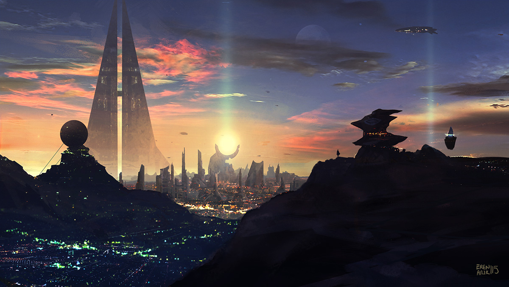
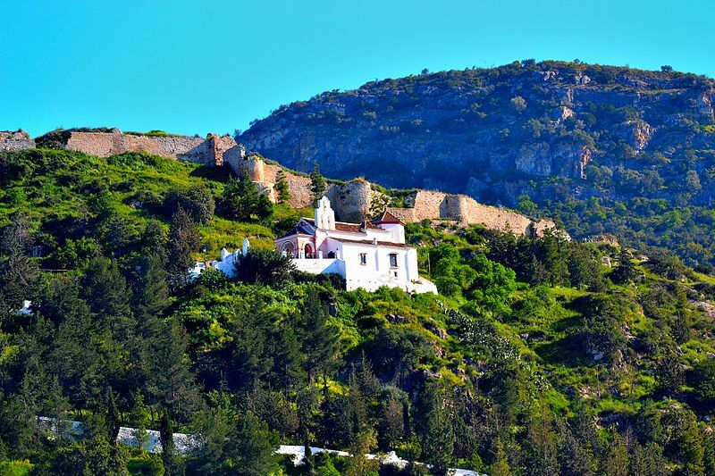
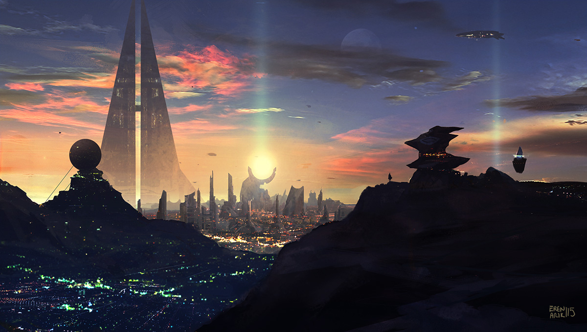
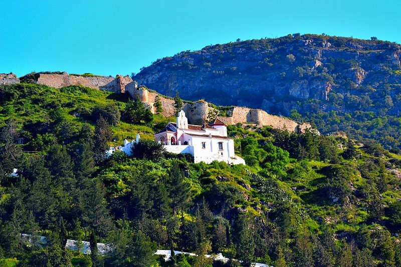
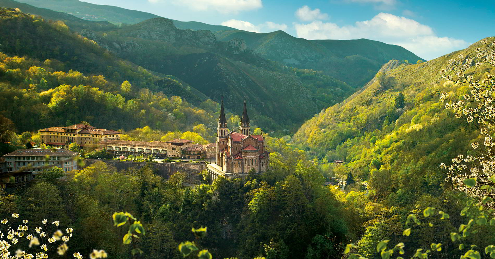
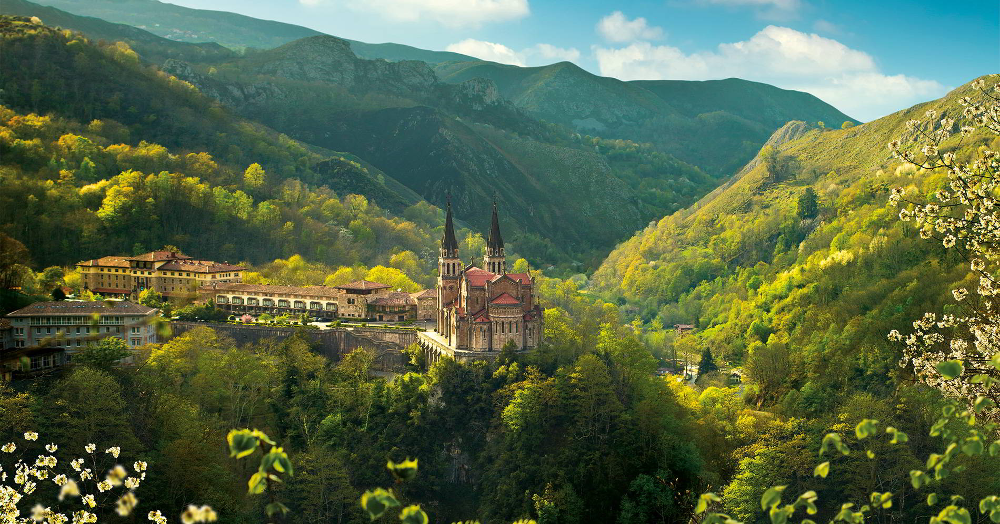

THE GREEN WEB
WHO AM I?
My name is Mario. Im a human being (by now >:)

My proposal in this page is that you know about me. Im searching for a job, and I want you to notice. In the next pages, you'll see more information about my interests, my studies and my experience... As you see, this page is not finished yet, but I'm trying my best. My biological body need to rest, and my mind isn't enough powerfull to do all six subjects at the same time, but nothing is impossible, so, chill out reader, I'll be updating this database with random stuff that I'm imagining while I'm writing at the moment. But, careful! >:( this is not only about random and weird things. This message box is for giving you a first impression. In the next fields (i mean, text fields, not the crop circles fields, that is misinformation, because aliens DON'T exist) you're gonna have what are you looking for, cybertraveller.
Im showing you my interests at first place of the page, because I want this page to be personal. I'm already show you my competences in the CV, and you came to this web via my CV. So, I understand that you want to know more about my lifestyle.
MY INTERESTS
Wanna know about my hobbies? let's go!
You have power over your mind, not outside events. Realize this, and you will find strenght
-Marcus Aurelius
If I could have eternal life, I would spend it all reading about the great thinkers. The human mind is beautiful.
Since I was in the adolescence, I began to reading the History of the Philosophy in the Bachelor. At first, I was afraid and scared about Philosophy, because I thought that this subject was obscure and very boring. Poor me! I couldn't be more wrong. When I first read Plato's dialogues, I fell in love with the reasonings about the most importants questions of the humanity. What is the Truth? What is the Happiness? I've never did these questions before. Since that moment, I've gained counsciousness about life, and it was a no-return way. Now, I really need to know every aspect of knowledge. I get pleased every time I found a new path to wisdom.
In general, I like all the categories of Philosophy (Metaphysics, Ethics, Politics, philosophy of culture...) but I specially love the Existentialism. I don't know. These philosophers have something that attracts me. My favourite philosopher is Albert Camus: an existentialist, of course! He wasn't just a philosopher, but a novelist. He earned a Nobel Prize because of his novel The Stranger. My favourite book of all time it's from him, and it's called The Myth of Sisyphus
Also I like a lot of subjects like Mythology, Theology, Anthropology, or Evolution Theory. I get excited every time I read how humans from different continents have a similar point of view about the "Hero Journey", I mean, every culture shares a similar pattern in his heroes, gods and myths. Thats a very interesting topic theorized by Joseph Campbell in his book The Hero with a Thousand Faces (I strongly recommend this book, because his work is the inspiration of the majority of the Hollywood writers. Joseph Campbell build the well-known "Hero path" or "Monomyth")
It's said that cinematography is the seventh art. Well, if thats true, then, the videogames are the eighth. I believe that the only thing that separates films from games is the fact that the player can be an active part of the story instead of simply being a passive spectator.
I'm not gonna lie if I tell you that some 'gaming-moments' I've experienced gave me goosebumps. Saving your people, defending the country, travel over the world to stand up on the top of the mountain, to simply look at the beautiful of the horizon... Isn't that enough to convince you? Then you need to see:
And that's not all. Not to mention about the immersive soundtrack and the beautiful orchestra of some videogames. They are simply beautiful. I think mixing these things and the possibility of choosing our path are truly an unique experience.
(aand... If you don't notice, yes! Skyrim is my favourite game :P)
The art of automate tasks and make life easier... Isn't awesome? We can achieve great things if we support people by creating new technologies and dominating the digital world. Medics needs more advanced tools, like so need other professions. So, let's work on it. Let's work on the goal of improve the people's life.
First time I went into computing was when I was eight years old. I felt so fascinated about the Windows XP interface. I loved the way that the interface worked, and all the things I could do. I remember the MSN Messenger, the minigames, the old and mysterious Youtube. Everything was so unreal then. Now I became more conscious, and that magic had decreased... Until I entered in the CPIFP Alan Turing! I don't know that computing could be so interesting!! Now I'm in love with the Linux command line interface, and I consider that "green and black" themed prompts in older screens are soooooooo hypnotic... I guess this is only the beggining, and I'm so excited about that.
I mean, look at this PC. It's perfect (for looking at, not for using 😂)
I really LOVE hearing music. I can't tell you my favourite genre because I consider myself very eclectic in music. I can listen electronic all day, but other day I can spend all day listen to Vicente Fernández. Maybe Monday is for Green Day, Tuesday for Sia, Wednesday for Avicii, Thursday for random films OST, Friday for Melendi, Estopa, El fary, Manolo Escobar... Saturdays for Don Omar, Daddy Yankee, Bad Bunny, Bomba Estéreo... And Sundays for "Relaxing music for studying"
I enjoy all the well done works. A good film for me has to be very entertaining, and, above all: it must have a good story. If a film don't have a meaning, at least, put a lot of explosions and guns and chaos.
The directors are very important too, because they print their unique singature among all the film. For example, Stanley Kubrick doesn't work the same way Michael Bay does. I really like the psychological films, so it's inevitable liking the Kubrick's movies, also those of Christopher Nolan. If I could rank directors, my personal ranking maybe is 1. Stanley Kubrick , 2. Ridley Scott and 3. Steven Spielberg.
Also, this is a list of my favourite movies:


SPAIN, MY COUNTRY
Do you believe you could know better a person by the place they was born? An image is better than one trillion words. Here is my antique multiversial reel, I found it in my molecular coffer. This is my fatherland:


 





 

")
MY EXPERIENCE
In ALUA SUN COSTA PARK (Torremolinos):
- 2023: Catering assistant: refilling dishes, frying food, maintaining the kitchen
- 2022: Waiter assistant: Setting up the restaurant, clear the tables and taking out the dishes from the office
MY STUDIES
🏫 Cártama: IES Jarifa (2012-2016):
📚 Educación Secundaria Obligatoria
🏫 Cártama Estación: IES Valle del Azahar (2016-2018):
📚 Bachelor degree
🏫 Málaga: UMA (Universidad de Málaga) (2018-2022):
📚 Philosophy Degree
🏫 Campanillas: CPIFP Alan Turing (2022-2024):
📚 Techinician in Microinformatic Systems
Are you entertained? Well, I need to do a lot of things, but, while i'm working in this page, you can enjoy this absolutely and majestic non-terrestrial-dancing-being:
(aand... YES, it is totally FAKE and FICTIONAL, because aliens DON'T EXIST, isn't it? ;)